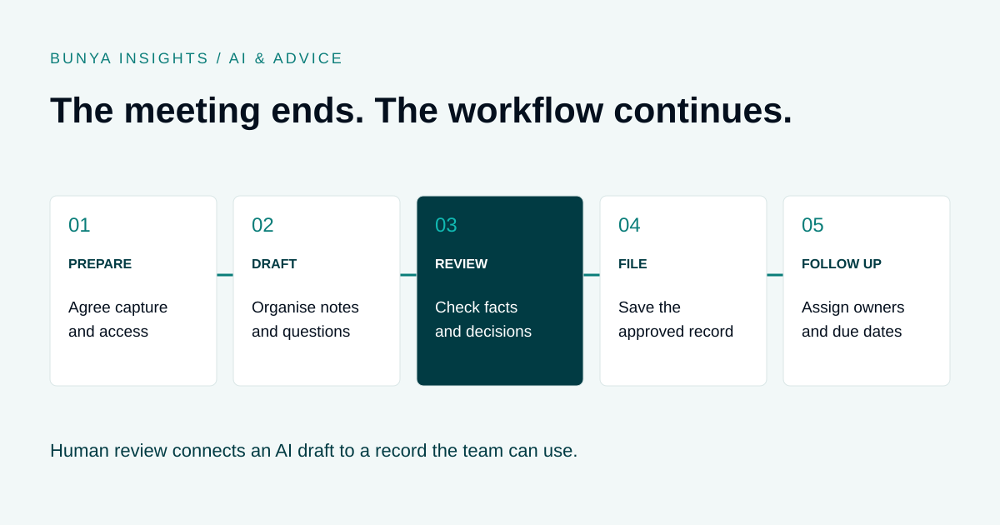

AI & advice
AI Meeting Notes for Financial Advisers: A Practical Workflow
Turn the conversation into a checked record and clear next steps.
THE SHORT ANSWER
AI meeting notes can turn a client conversation into a draft summary and proposed actions. A useful financial advice workflow adds human review, a structured client file note and follow-up tasks with clear ownership. Recording arrangements, privacy controls and the firm’s review process need to be established before capture.

From conversation to follow-up
AI meeting notes can help a financial adviser organise a conversation into a draft summary, questions and suggested actions. Their practical value depends on what happens next: someone checks the draft, connects it to the correct client and makes the agreed follow-up visible to the team.
- Prepare the meeting. Confirm the approved tool, participants, recording arrangements and information the tool may use. Offer the firm’s alternative note-taking process when recording is unsuitable.
- Capture the conversation. Follow the agreed process. Note recording interruptions, unclear speakers and any off-record discussion so the reviewer understands the limits of the source.
- Create a structured draft. Separate facts stated by the client, topics discussed, decisions, unresolved questions and proposed actions. Leave missing information marked as unconfirmed.
- Review and approve. Check the draft against the available source and the adviser’s recollection. Resolve material uncertainty with the client where needed. Record who reviewed the note and when.
- Assign and track the work. Create approved tasks with an owner and due date. Link the reviewed note to the client record, then check completion through the normal workflow.
Transcript, summary or client file note?
These outputs serve different purposes. A fluent summary can still omit a qualification, confuse two speakers or turn a possibility into a decision.
| Output | Purpose | Review focus |
|---|---|---|
| Transcript | A text version of the recorded conversation. | Speaker labels, names, figures and missing audio. |
| AI summary | A condensed draft of the main points. | Omissions, unsupported conclusions and lost context. |
| Reviewed file note | The firm’s checked record of the meeting and its outcomes. | Accuracy, relevant context, decisions and approval. |
| Action list | The follow-up work agreed after review. | Correct client, owner, due date and task status. |
A meeting note also serves a different purpose from a Statement of Advice. Read our guide to AI Statement of Advice drafting for the separate preparation and review steps involved.
A practical meeting file-note template
Use this as a starting structure and adapt it to your licensee’s requirements and the type of meeting. It is not a prescribed compliance template.
- Meeting details: client record, date, meeting type, attendees and their roles.
- Capture details: source used, recording arrangements and any gaps in the source.
- Purpose and scope: why the meeting took place and what it covered.
- Client updates: changed circumstances, priorities and information supplied, clearly attributed.
- Discussion: topics, questions, options and relevant qualifications.
- Decisions and instructions: what was agreed, by whom, and what remains undecided.
- Follow-up: each action, responsible person, due date and dependency.
- Review record: reviewer, review date, corrections and unresolved points.
Keep observations separate from interpretation. “The client said they may reduce their working hours” should not become “The client will retire next year” unless that decision was actually confirmed.
Worked example: a review meeting
Illustrative example, using fictional information. During a review, a client says they are considering reducing work hours. They agree to send an updated income estimate. The adviser will then assess whether further analysis is needed. No strategy change is agreed.
An AI draft says: “Client retiring; adviser to update retirement strategy.” The reviewer corrects both the certainty and the action. The approved note records that reduced hours are under consideration, the income estimate is outstanding and no change has been authorised.
The resulting workflow has two linked tasks: request the income estimate, then review it after receipt. Each gets an owner and an agreed due date. The system should not treat a suggested strategy change as approved simply because it appeared in the AI draft.
For the wider review cycle, see our client review workflow checklist.
Privacy and recording: decide before capture
The OAIC’s guidance on commercial AI tools discusses meeting transcription, including whether participants know about recording and transcription and whether consent is given. It also recommends against entering personal information, especially sensitive information, into publicly available generative AI tools. See the OAIC guidance.
Before rollout, have the appropriate people assess applicable recording laws, privacy obligations and licensee policy for your circumstances. Agree how participants are informed, any consent process, the alternative when recording is declined and how access, retention and deletion are handled.
Ask the supplier where audio, transcripts and summaries are processed and stored; who can access them; whether data is used for model training; and how these settings are enforced. A Microsoft connection alone does not answer those questions.
ASIC’s REP 798 on AI governance examines AI use, consumer risks and governance across financial services and credit licensees. It provides context for assessing a tool and its controls; it does not endorse a particular meeting-note product.
What to test before choosing a tool
Run an approved pilot with synthetic or otherwise authorised sample material. Score the full workflow, including the work required to correct and file the output.
- Accuracy: test names, financial amounts, negations, multiple speakers and ambiguous statements.
- Traceability: can reviewers find the relevant source and identify missing or uncertain information?
- Templates: can the output match the firm’s file-note structure without inventing missing answers?
- Review controls: can a draft remain separate from the approved record, with a clear reviewer?
- Client matching: how are records selected and incorrect matches corrected?
- Follow-up: do approved actions become useful tasks, or require manual re-entry?
- Information handling: confirm permissions, storage, retention, deletion, export and supplier responsibilities.
- Total effort: measure correction time, filing time and missed actions alongside drafting time.
A useful pilot compares like-for-like meeting types before and after the change. Do not assume a time saving until the team has measured the complete process.
Where Bunya fits
For Bunya, the useful connection is between a conversation and the work around the client. Discuss the meeting capture source, draft structure, review step and approved follow-up during the Blueprint process.
Command Centre provides the context for client operations; Bunya Voice addresses the phone side of the system. Meeting capture, transcription tools and integrations need to be demonstrated and scoped for your setup. Do not assume every meeting platform or call type is included.
Bring a fictional meeting scenario to a demo and ask to see the route from draft to review, client record and assigned task.
Common questions
Can AI write a financial adviser’s meeting notes?
It can prepare a draft from an approved source. The adviser or designated reviewer still needs to check accuracy, context, omissions and actions before accepting it as the firm’s record.
Is a transcript enough for a client file note?
A transcript captures speech but may not clearly identify decisions, unresolved issues or next steps. Use the firm’s record-keeping requirements to decide what a reviewed file note must contain.
Do we need permission to record a client meeting?
Assess the recording laws and privacy requirements that apply to the meeting, along with licensee policy. Establish the notification and consent process before using the tool, rather than assuming a meeting invitation is sufficient.
Can AI notes update the CRM automatically?
Some workflows support this, but integration, permissions and approval controls vary. Test client matching, draft status and error handling before enabling automatic writes or task creation.
What if the AI gets a figure or instruction wrong?
Correct the draft before approval and check whether the error has reached other records or tasks. If the source is unclear, seek clarification instead of filling the gap with an assumption.
Sources and scope
Sources checked 20 September 2026: OAIC guidance on commercially available AI and ASIC REP 798. This article offers a practical workflow to adapt with your firm; it is not legal advice or a guarantee of compliance.